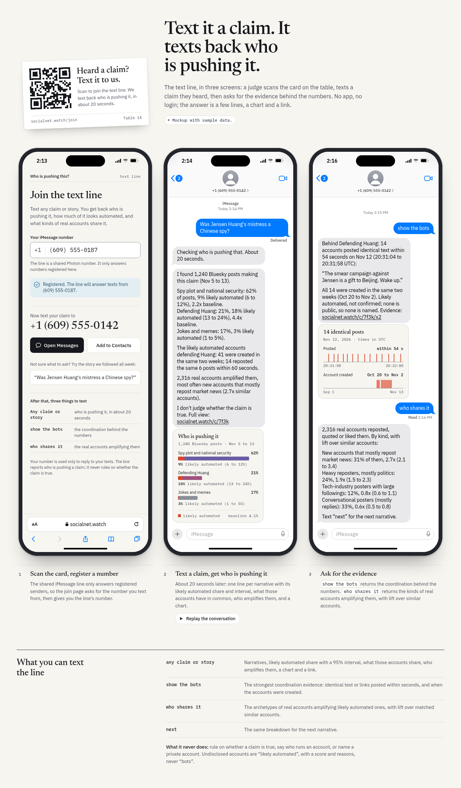
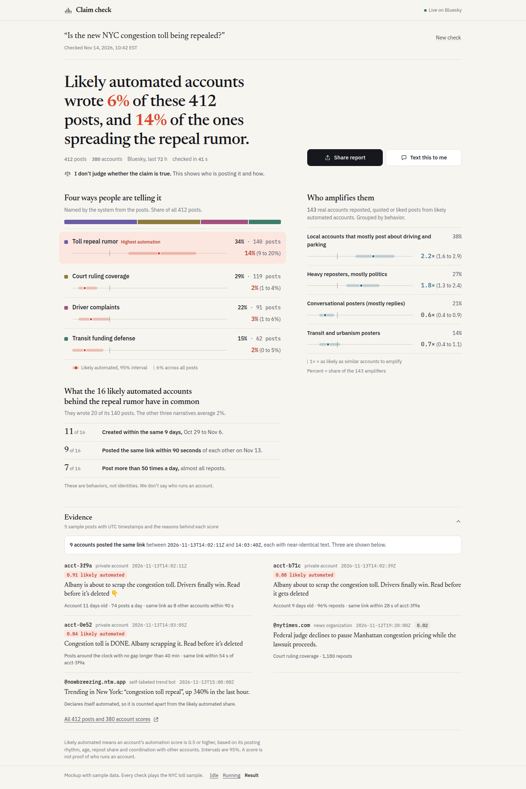
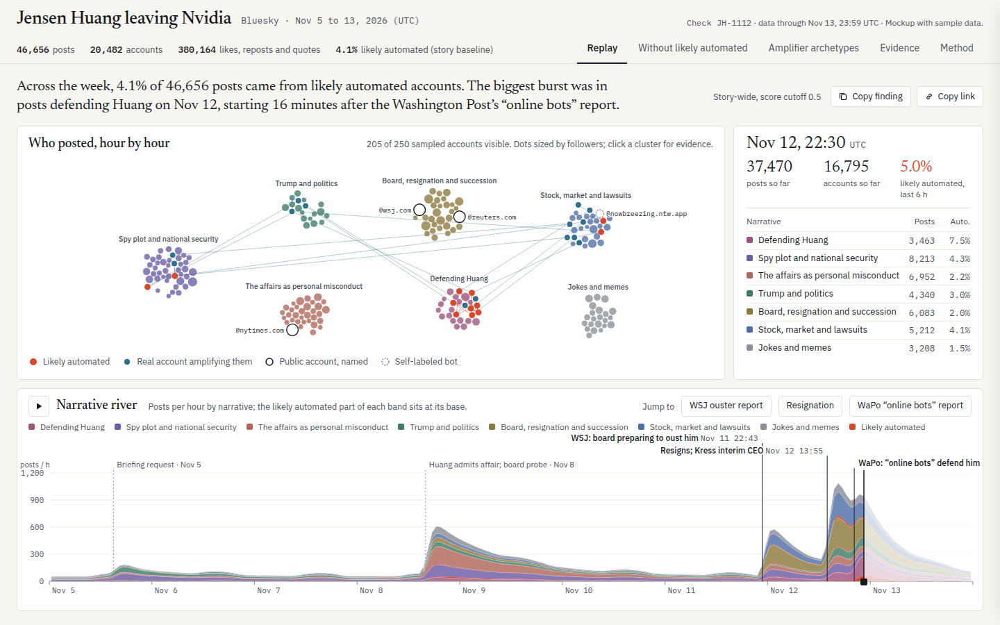
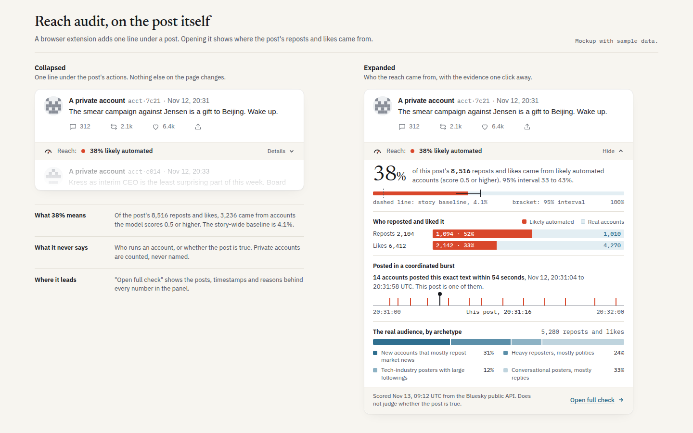
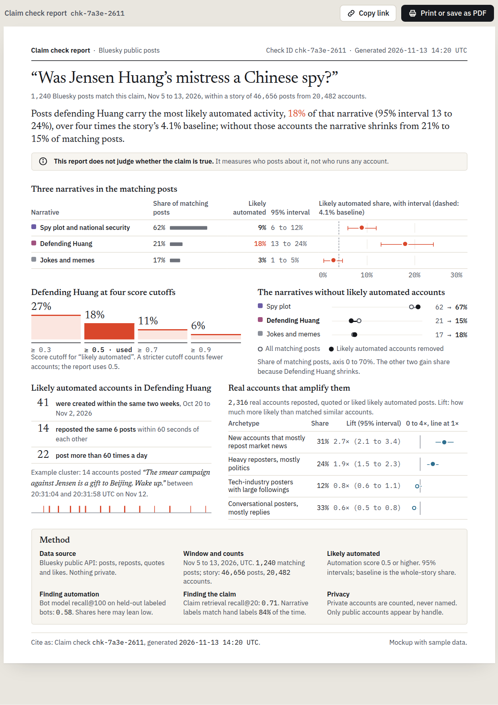
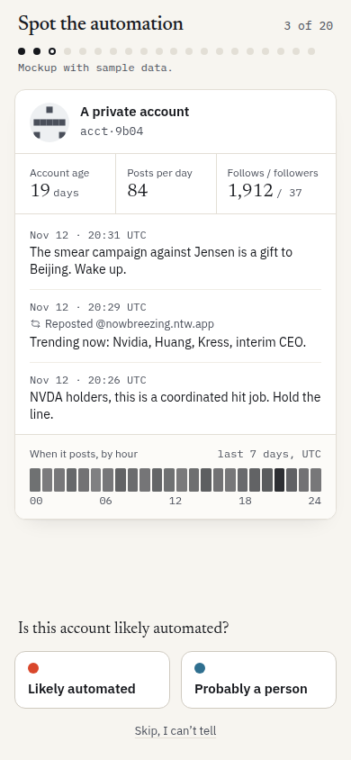

Six ways to use it
Same palette, type and sample data in every mockup; the only difference is how a person engages. Mockups with sample data.

Text a claim
QR card, join page, the conversation, follow-ups. Photon iMessage.
judges, anyone
Check any story
Type a claim, watch the live Bluesky check, read the result in 10 seconds.
anyone, any story
Newsroom dashboard
Replay, the story without the bots, archetypes, citable evidence, method.
journalists, analysts
Check on the post
A reach audit on the post itself: how much of its spread is automated.
readers, editors
One-page report
A citable summary an editor can forward or print.
editors, comms teams
Spot the automation
Judges guess, then see the model's call and reasons. Backup demo.
table game